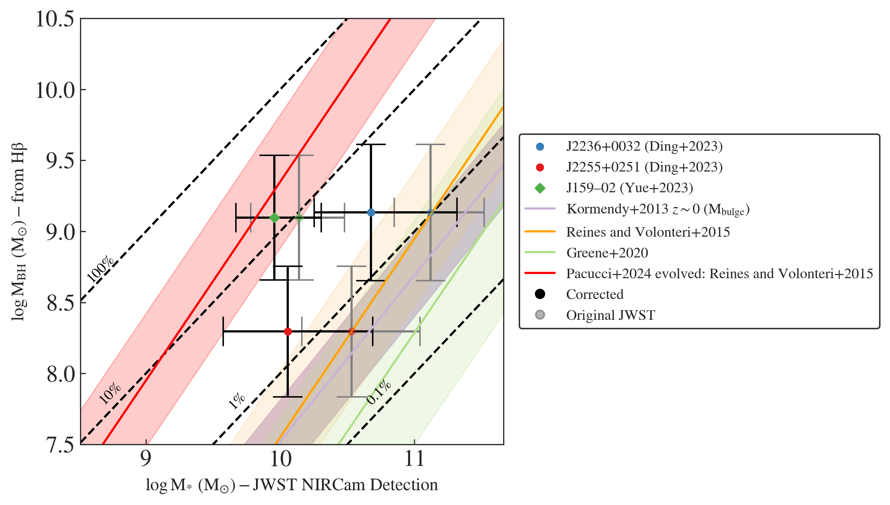

Physics PhD Candidate at the University of Melbourne
About
I am a second-generation Filipina-American from Concord, California, with a multi-ethnic heritage that blends Filipino roots from Puerto Princesa, Palawan, with Hispanic and white settler ancestry. This diverse background deeply informs my perspective and commitment to equity and representation in astrophysics. As a dedicated advocate for women of color in science, I actively mentor emerging scholars and strive to lead by example through both my research and community engagement.
My academic journey spans three countries, complemented by nearly a year of data science experience. I worked as a data science intern at NASA Ames in 2019 and later as a physicist at Facebook (Meta) in 2021. Beyond astrophysics, I find balance through coffee, solo travel, and vinyasa yoga. Follow my academic journey on Twitter at @sabrinastronomy and Linkedin.
Brief Academic Timeline
PhD Candidate at University of Melbourne/ASTRO 3D (2022-present)
Physics MSc at McGill University (2019-2022)
Astrophysics BA at UC Berkeley (2018) (Transferred from Diablo Valley College in 2015)
Me in Hokkaido, Japan!Me, my mom, and my grandma!
Research
The publications I've been a part of can be found here.
I am passionate about research between infrared and radio wavelengths and bridging the divide between theory and instrumentation. Although my
research experiences have been diverse, I have unified my work through both high performance computing and data science applications.
High-z Theory
I work broadly on simulating the high-z universe (z ≥ 6) to compare to current and future observations.
Simulation-Based Inference for JWST Biases
The James Webb Space Telescope (JWST) has unveiled a new era of early universe quasar observations with
the detection of stellar light from their hosts for the first time. I compare JWST high-z quasar host detections to analog galaxies within the BlueTides simulation.
I create mock images and spectra of BlueTides galaxies to compare to hosts and help constrain observational biases. My latest project develops a simulation based inference pipeline to infer the observational bias on the stellar mass of the host galaxies of high-z quasars.
See Berger+2024 and Berger+2025.

How biased are JWST stellar mass observations? We find that JWST PSF removal may sometimes overestimate stellar masses leading to an even larger deviation from the low-z relation.
During my master's degree at McGill University, I worked on calibrating
radio telescopes using both traditional and novel techniques with Jonathan Sievers. I made the first proof of concept measurement using GPS satellites to calibrate radio dish telescopes. I measured
consistent and repeatable satellite slices through the pathfinder of Canada's next leading radio telescope: Canadian Hydrogen Observatory and Radio transient Detector (CHORD). I also explored the use of GNSS in VLBI phase calibration in comparison to classic pulsar calibrators.
Check out the paper and GitHub if you are interested. Or if you're really interested, you can check out my Master's thesis !
Averaged beam measurements for several GPS satellites above the CHORD pathfinder. We found a minimum difference of 0.56 db-Hz in the main beam for multiple passes.
Industry Experience
Did you know that a Facebook employee claims to have invented the job title
data scientist ?
Facebook
NASA
Resources
Here are some of the resources I've written by myself or contributed to (more to come!):
I started my teaching journey as a community college student, tutoring introductory astronomy courses. Working with students from diverse backgrounds—including English language learners and those with special needs—taught me the importance of adaptability and empathy in education. This experience ignited my passion for teaching and drove me to become a more effective and compassionate instructor. Having had limited opportunities to experience active learning in my own education—despite knowing its effectiveness (see this article if you're interested)—I strive to incorporate active learning into all my teaching experiences.
University Teaching
As a graduate TA and tutor, I have been able to put my teaching skills into practice and further my confidence as a teacher.
I have taught tutorials, held office hours, made solution sets, and graded while a TA.
University of Melbourne (During PhD)
The Art of Scientific Computing (Summer/Winter 2023)
Special Relativity (Winter 2023)
McGill University (During MSc)
Signal Processing (Spring 2021/2022)
Introduction to Astrophysics (Mixed Honors Undergraduate and Graduate Course) (Fall 2021)
Computational Physics with Applications (PHYS 512) (Mixed Honors Undergraduate and Graduate Course) (Fall 2019)
Delivered 25 hours of lectures on Python concepts each month.
Provide 1 on 1 tutoring, mentorship, and homework and final project feedback.
Helped 150+ women and non-binary students of all ages learn Python for the first time.
Here's some student feedback I received while at Hackbright that embodies my teaching style: "I appreciate your empathy and welcoming tone when you present. I honestly don't feel so dumb when I provide incorrect answers to reviews or random questions because that's the environment you've created. It's a safe space and I wish you could teach the August full time cohort!!"
Coding Workshops
McGill Physics Hackathon (Introduction to Machine Learning), 20+ students (2021)
McDonald Particle Physics Summer School (Introduction to Unix/Linux), 100+ students (2021)
Private Tutoring
Over the years, I also spent 150+ hours as both a group and private physics and programming tutor to elementary through university students. This involved crafting sample problems and providing mini-lectures on the subject matter. (January 2016 - present)
Outreach
Currently, I focus most of my outreach
efforts as a co-host of the astro[sound]bites podcast! However, I outline my previous outreach in depth below this section. Or checkout my CV for a full list.
astro[sound]bites
Since 2022, I’ve been a co-host for the astro[sound]bites podcast , the podcast spin-off of astrobites . astro[sound]bites provides an accessible avenue for anyone interested in astronomy to learn about exciting research at the undergraduate level.
Every other week, we synthesize two astrobites from across the spectrum of astrophysics subfields and unify them into a fun and cohesive theme. We also host episodes on topics related to equity and inclusion within astronomy. As of January, 2025, our episodes have amassed more than 27,000 downloads. Below are three of the episodes I'm most proud of. In Episode 68, I give an overview of my atypical path into astronomy.
I began participating in astronomy related public engagement as soon as I chose my major.
My first experience was as a volunteer at the local Chabot Space and Science Center
near me in 2013. Since then, my passion for participating in public engagement went into full force. I became an
American Astronomical Society (AAS) Astronomy Ambassador
while at UC Berkeley, which included a two-day workshop on best practices in science public engagement.
McGill Physics Hackathon and Outreach Coordinator
I served as a McGill
Physics Matters Outreach Coordinator throughout 2020. While in this role, I co-led the organization of the
McGill Physics Hackathon in November,
2020 which included organizing eight coding workshops on Python to Machine Learning attended by more than 200 people. I also
helped organize and facilitate a variety of programs and public astronomy talks supporting outreach in the Montreal community and beyond.
This included initiating an ongoing international collaboration with the McGill Space Institute and
Dyer Observatory at Vanderbilt University during the COVID-19 pandemic.
Outreach in Underserved Communities
As I participated more in outreach, I found that my main interest lies in reaching those who have not had as much access to science engagement programs. I strive to target my public engagement almost entirely to underserved communities. Through the Astronomy of the Pacific's Project ASTRO Teacher Program (September 2016 - June 2017), I developed curriculum and instructed a fifth-grade class in astronomy at Rosa Parks Elementary School in Richmond, California. Since then, I also participated in a month long active learning and feedback workshop through the AAS and Astronomical Society of the Pacific that culminated in a presentation to Fischer Middle School students in San Jose, California in 2021.
Public Talks
I’ve also given invited talks on my research and my path through science at